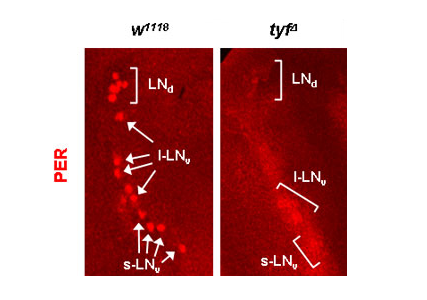

연구성과 10선
연구성과 10선
KAIST RESEARCH ACHIEVEMENTS
생체 리듬 유전자 발견
및 메커니즘 규명
생명과학과 최준호
요약
생체 리듬 연구의 신기원 이룩 최준호 교수 연구팀은 새로운 초파리 생체 리듬 유전자 '투웬티-포(twentyfour)'를 찾아내어 생체 시계 작용 기작 중 전사체에서 단백질을 만드는 번역 단계에서의 조절이 중요하다는 점을 밝혀냈다. 이 결과는 네이쳐(Nature)지에 게재됐다.
연구내용
지구의 자전에 의해 생기는 낮과 밤은 빛, 온도와 같은 환경 변화를 일으킨다. 이에 적응하기 위해 인간, 초파리, 쥐 등 많은 생명체들은 하루를 주기로 작용하는 생체 시계를 가지고 있다. 각각의 생명체가 몸속에 지닌 생체 시계는 시간에 대한 정보를 주는 빛이나 온도 등의 외부 자극 없이도 약 24 시간을 주기로 여러 생명 현상이 일어나도록 조절한다. 시간에 대한 정보가 주어질 경우 생체 시계는 외부 환경 변화 주기와 일치하도록 동조화된다. 해외여행시 시차로 인한 어려움을 겪다가 점차 현지 시간에 적응을 하게 되는데, 이는 우리 몸 안에 있는 생체 시계가 현지의 시간에 맞춰지는 과정이다. 하루 주기의 생체 시계는 생명체의 잠을 조절하는 중요 요소로 알려져있다. 생체 시계와 관련된 수면 장애로는 전진성 수면 위상증후군이 대표적인데, 매우 이른 시간에 잠이 오고, 이른 시간에 기상하는 수면 양상을 보인다.
최준호 교수가 실험에 사용한 초파리는 다른 모델 동물들에 비해 개체수를 늘리기가 쉽고 유전학적 실험이 수월하며 쥐, 인간과 유사한 생체 시계구조를 가지고 있어 하루 주기 생체 리듬 연구에 널리 쓰이고 있다. 초파리 뇌에는 생체 리듬을 조절하는 신경 세포들이 있고, 각 세포는 분자적 시계를 가지고 있어 하루 주기 생체 리듬을 만들어낸다. 이를 구성하는 6개의 중요 유전자들은 시계의 부품과 같이 맞물려 돌아가면서 외부 자극없이도 하루 주기로 돌아가는 생체 시계를 유지시키고 있다. 생체 시계 관련 유전자들은 전사체 합성, 인산화 등의 번역 후 조절, 단백질 분해 등의 여러 단계에서 조절된다. 초파리는 하루 중 주로 새벽에 번데기에서 성체가 깨어나고, 해가 뜨기 전과 해가 지기 전에 미리 빛의 변화를 예측해 활동성이 증가하며, 지속적인 어둠에서도 약 24시간 주기의 활동 양상을 보이는 등의 하루 주기성 생명 현상을 보인다.
초파리 생체 리듬과 번역 기작 사이
연결 고리 찾아
최준호 교수 연구팀은 새로운 생체 리듬 유전자를 찾기 위해서 형질 전환 초파리 라이브러리를 이용해 하루 주기의 행동 변화를 관찰했다. 연구팀이 3일간 12시간 단위로 빛, 어둠 상태가 되는 실험조건과 7일 동안 어둠 상태 조건에서 컴퓨터와 연결된 행동 측정 모니터를 이용해 초파리의 하루 주기 행동을 관찰, 분석한 결과, 야생형 초파리에 비해 주기성이 약해지고 행동 주기가 24시간보다 길어진 형질 전환 초파리를 찾을 수 있었다. 최준호 교수는 이 형질 전화 초파리의 이상 행동이 새로운 유전자에 의한 것임을 밝히고, 이 유전자를 '투웬티-포(twenty-four)' 라고 이름 지었다. 또한 유전학 실험과 행동 분석을 통해 초파리 뇌 내의 시계 세포에서 투웬티-포의 정상 발현이 지속적인 어둠상태에서 하루 주기 활동 유지에 중요하다는 사실을 증명 했으며, 생체 리듬 조절에 중요한 유전자들과의 상호작용을 조사함으로써 투웬티-포에 의한 기간(period)의 번역(전사체 정보를 이용해 단백질을 생성하는 단계) 조절이 초파리의 생체 시계 조절 기작의 일부임을 밝혔다. 지금까지 초파리 생체 리듬에 관한 연구는 전사 단계와 번역후 조절에 관해 주로 초점이 맞춰져 있었고, 번역 단계에서의 조절은 상대적으로 많이 연구되지 않았다. 그러나 이번 연구를 통해 투웬티-포와 번역 단계에서 작용하는 여러 단백질이 상호 작용하고 있음이 밝혀져, 초파리 생체 리듬과 번역 기작 사이의 연결 고리를 찾게 됐다.
의미와 전망
 그림 1. 초파리 뇌 내의 투웬티-포(tyf)와 피리어드 (PER)의 발현 양상
그림 1. 초파리 뇌 내의 투웬티-포(tyf)와 피리어드 (PER)의 발현 양상
 그림 2. 투웬티-포 돌연변이체 뇌 내의 피리어드 단백질의 발현 저하
최준호 교수의 연구는 유전자 번역 단계에서의 조절이 생체 시계의 작용 기작과 연관되어 있음을 밝히는 데 성공했다. 이번 연구 성과는 쥐, 인간과의 연관성을 바탕으로, 고등 생명체의 생체 리듬 연구와 생체 리듬 장애로 인해 생기는 수면 문제를 푸는 데 도움이 될 것이다.
연구비 지원
ㆍ교육과학기술부 21세기프론티어 뇌기능활용 및 뇌질환 치료기술개발사업
관련문헌
ㆍ| Lim, C., Lee, J., Choi, C., Kilman, V. L., Kim, J., Park, S.M .,Jang, S. K., Allada, R., and Choe, J. (2011) The novel gene twenty-four defines a critical translational step in the Drosophila clock. Nature 470, 399-403.